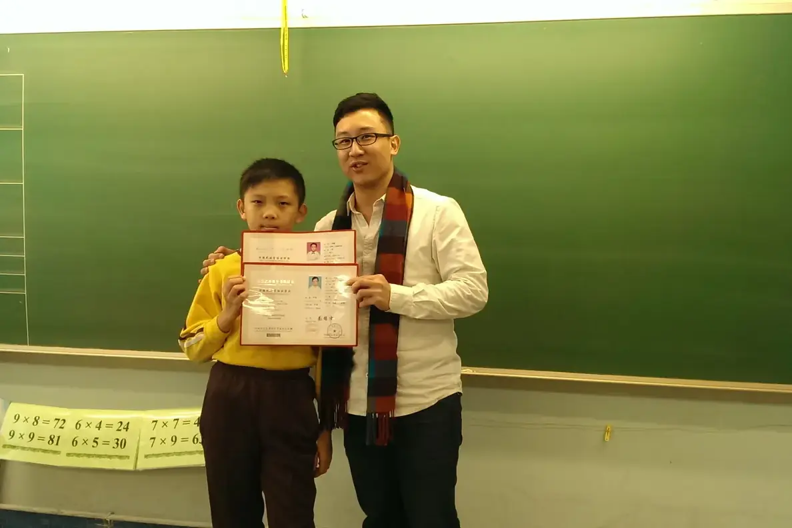

考級和比賽的分別，要從正式章程、曲目限制和評核安排去看。兩者都可能重視技巧、音樂表達和完整演出，先弄清自己為何參加，才決定練習和演出的重點。

把考級當比賽，或把比賽當考級，都會錯配訓練。兩份報名表同時放在桌上，學生和家長最想問的往往是：同一首曲，可不可以兩邊用？
目標不同，要先說清楚
常聽到一句話：考級重穩定，比賽重個性和舞台呈現。這可以作為一個提醒，方便初步思考，但不能簡化成一種只看穩定、另一種只看個性。兩邊都可能要求技巧、表達和完整演出。
目標要落到這個學生身上。想用一個考試檢查這一階段的能力，想多一次舞台經驗，還是想試試與別人同場演奏？答案不同，時間的分法就不同。
目標說得清楚，才容易判斷哪些活動能幫助學習，哪些安排會令準備過於分散。
兩項都想參加，先比較甚麼？
把四項列成一張表，左右對照：
- 曲目限制
- 演出時長
- 評核方式
- 報名條件
列完再看自己的參與目的。
若兩邊都準備，要檢查曲目版本和規則是否相容。不要假設同一套節目可以直接通用。章程可能更改，一切以主辦機構現行公布為準。
準備方法哪裏不同？
差別主要在時間分配，基本功兩邊都一樣要。基本聲音和完整表達要兼顧，不會因為目標不同而省掉。
若主要目的是考級，時間要照顧到所選考試的全部評核項目，曲目以外的部分也要分開追蹤，做法見考級三項：音階、視奏、聽覺。
若主要目的是比賽，曲目和舞台上的完整呈現會佔較多時間，上台流程也要提早練。
兩邊都參加，又看到準備開始分散，就要取捨：哪一項對這個階段最有幫助，就先保住它。每星期回到同一段比較，看準備有沒有向前，不用每次整套重來。
常見問題
同一首曲可以同時用於考級和比賽嗎？
不能假設。要檢查兩邊的曲目限制和版本要求，以現行章程及大綱為準。
孩子應該先考級還是先比賽？
先看參與目的和現時能力。列出兩邊的要求，再與老師商量，看哪一項較配合這個階段的學習。
考級重穩定、比賽重個性，這樣理解對嗎？
只對一部分。兩者都可能重視技巧、表達和完整演出，差別要看正式章程和評核安排。
下次上堂前，把兩邊的章程要點填進上面那張四項表。
家長想了解孩子是否需要這些目標，可讀表演、老師與考級之間；想討論曲目安排，見考級準備。